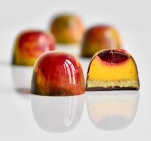

Välkommen till Pralinkullans hemsida. Sidan är under arbete och här kan du så länge hitta bilder, info och presentation av Elina, som är skaparen av Pralinkullan

Hösten 2022 var jag med och tävlade i Pralinslaget. Med denna pralin, som jag kallar "Röda himlar" - med smak av hallon, saffran och pistage, säkrade jag en topp 10 placering.
Lite text här... bla bla bla